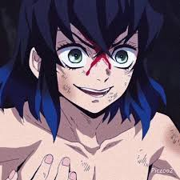

Demon Slayer
Released: April 6, 2019
Genre: Action, Supernatural, Drama, Fantasy
Demon Slayer: Kimetsu no Yaiba follows Tanjiro Kamado, a kind-hearted boy who becomes a demon slayer after his family is slaughtered and his sister Nezuko is turned into a demon.
With breathtaking animation, emotional depth, and fierce battles, Demon Slayer has become one of the most beloved modern anime series.
Cast
Tanjiro Kamado
Voice: Natsuki Hanae
Nezuko Kamado
Voice: Akari Kito
Zenitsu Agatsuma
Voice: Hiro Shimono

Inosuke Hashibira
Voice: Yoshitsugu Matsuoka